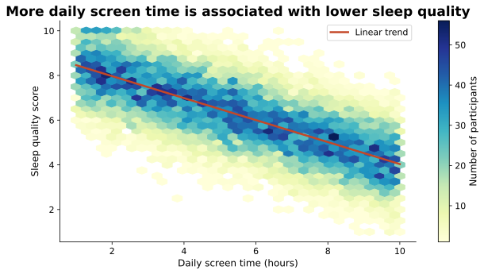
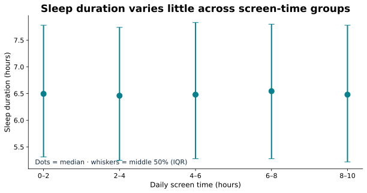
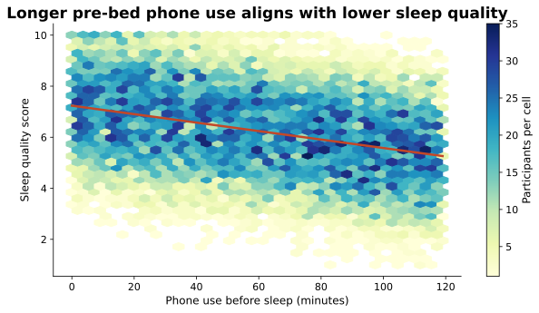
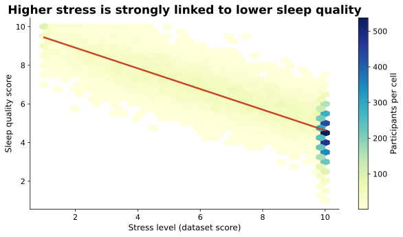
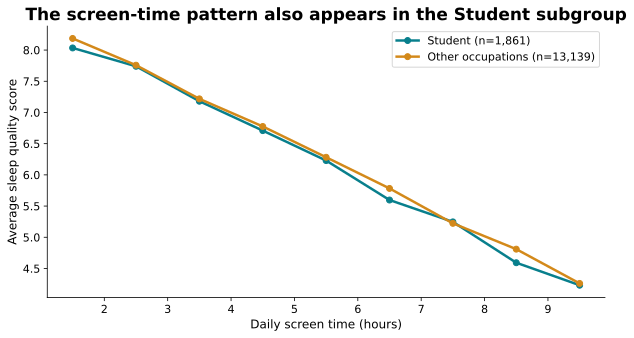

Screen time vs sleep quality


What changed
Hexbin density replaces overplotting, with a visible fitted trend and participant-count legend.
Finding and implication
Higher screen time aligns with lower quality; this is an association, not causation.
Screen time vs sleep duration


What changed
Group medians and interquartile ranges replace a dense point cloud. The vertical scale uses hours.
Finding and implication
Sleep duration remains comparatively stable across screen-time groups.
Phone use before sleep


What changed
Density bins and a trend line make the direction readable; axes include minutes and score units.
Finding and implication
Pre-bed phone usage shows a negative association with sleep quality.
Stress and sleep quality


What changed
A high-contrast density plot highlights the overall relationship without hiding overlapping points.
Finding and implication
Stress has a strong negative relationship with sleep quality.
Student vs other occupations


What changed
Separate labeled group lines, consistent scales, and sample sizes clarify subgroup comparison.
Finding and implication
The student-labeled subset exhibits a similar pattern; student does not necessarily mean college student.